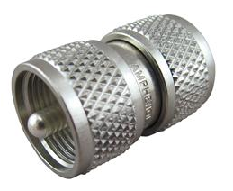

DXEngineering has a 50% off sale of these still expensive double male PL-259 connectors by Amphenol. At least they are proud enough of their product to put their name on it.
https://www.dxengineering.com/
parts/aml-83-877

73,
Bob – W6OPO
_______________________________________________
Chat mailing list
Chat@ncdxc.org
http://mail.ncdxc.org/mailman/listinfo/chat_ncdxc.org
Message delivered to pdlpsher@gmail.com